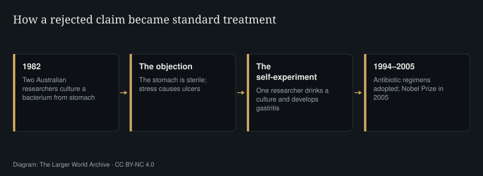

The finding
In 1982 Barry Marshall and Robin Warren, working in Perth, found a spiral bacterium — later named Helicobacter pylori — in stomach biopsies from patients with gastritis and ulcers. The prevailing view was that the stomach was sterile and that ulcers were caused by stress and excess acid.
Maps, diagrams and images

Their paper was rejected at a conference and then published, and the finding was largely ignored for years. Marshall famously drank a culture of the bacterium in 1984 and developed gastritis, which he then treated with antibiotics.
The outcome
The causal link was established, antibiotic treatment transformed ulcer care, and Marshall and Warren received the Nobel Prize in Physiology or Medicine in 2005. H. pylori is now recognised as the cause of most peptic ulcers and a major risk factor for gastric cancer.
Documented: the bacterium, the causal link and the treatment.
Documented: the initial rejection and the decade of resistance.
Documented: the Nobel Prize, 2005.
Not established: that all ulcers are bacterial — some are drug-related.
The label: documented — a case where the establishment was wrong.
Why it is in the archive
Because the archive is mostly about claims that failed, and it needs the cases where the minority view won on evidence.
Open resources on this topic
- PapersOpen-access articles: DOAJ · PubMed Central · Internet Archive Scholar
- BooksPublic-domain and borrowable copies: Open Library · Project Gutenberg · Google Books · Internet Archive
More images
Cite this page
Momin, S. (2026). Ulcers Are Bacterial. The Larger World Archive. https://drsamonline.github.io/LARGE_GLOBE/ulcers-bacterial.htmlMomin, Sohil. “Ulcers Are Bacterial.” The Larger World Archive, 2026, https://drsamonline.github.io/LARGE_GLOBE/ulcers-bacterial.html.Momin, Sohil. “Ulcers Are Bacterial.” The Larger World Archive, 2026. https://drsamonline.github.io/LARGE_GLOBE/ulcers-bacterial.html.@misc{ulcers2026ulcers,
author = {Momin, Sohil},
title = {Ulcers Are Bacterial},
year = {2026},
howpublished = {The Larger World Archive},
url = {https://drsamonline.github.io/LARGE_GLOBE/ulcers-bacterial.html},
note = {Last reviewed 20 November 2026}
}Last reviewed 20 November 2026 · Corrections policy · this page is not peer reviewed
Sources for this page
- Wikipedia, “Helicobacter pylori” — the organismen.wikipedia.org
- Wikipedia, “Barry Marshall” — the researcheren.wikipedia.org
- Wikipedia, “Peptic ulcer disease” — the conditionen.wikipedia.org
- Wikipedia, “Nobel Prize in Physiology or Medicine” — the awarden.wikipedia.org